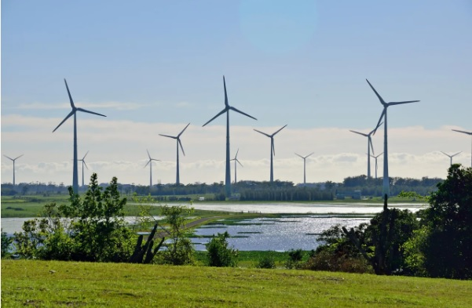

O que é geração de energia eolica ?
A geração de energia eolica é basicamente uma turbina tipo um cata-vento que é impulsionada pelo vento e acaba produzindo energia
Vantagem e Desvantagem
vantagem: energia limpa e barata desvantagem: depende do clima...

foto do parque eolico de osorio-RS
Fonte: https://www.statkraft.com.br/onde-operamos/brasil/complexo-eolico-osorio/